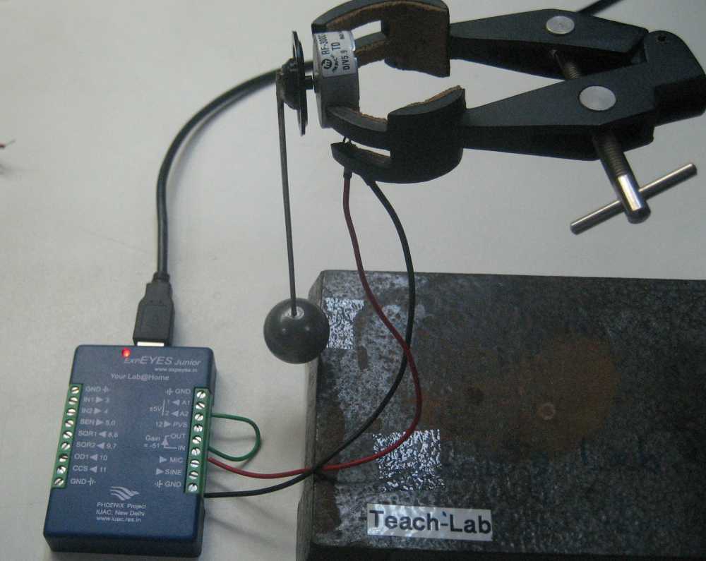
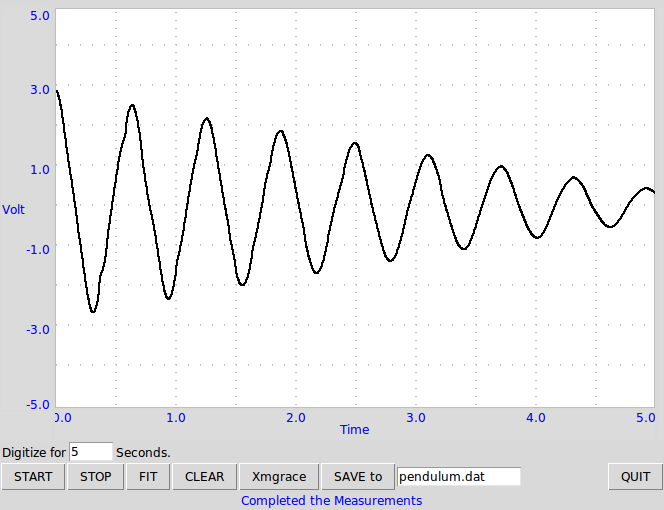

To study nature of oscillations of a pendulum, we need to measure the angular displacement as a function of time. Since angle encoders are expensive, we have used a DC motor, that gives a voltage proportional to the angular velocity. Fitting this curve also gives the period of oscillation of the pendulum.
 